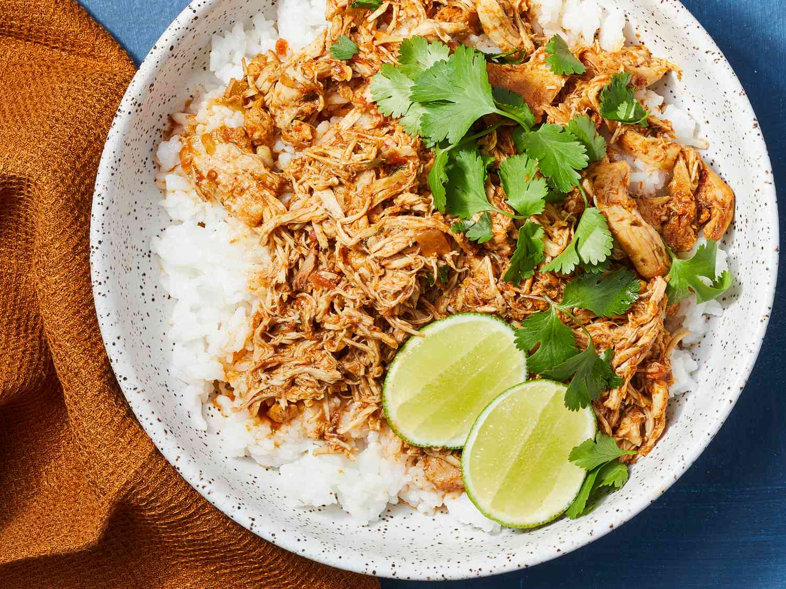

Home
Slow Cooker Lime Cilantro Chicken

Slow cooker lime cilantro chicken is a tender, shredded Mexican-inspired dish made by slow-cooking boneless, skinless chicken breasts or thighs in a zesty blend of lime juice, fresh cilantro, garlic, cumin, and salsa or broth
Ingredients
- 1 (16 ounce) jar salsa
- 1 (1.25 ounce) package dry taco seasoning mix
- 1 medium lime, juiced
- 3 tablespoons chopped fresh cilantro
- 3 pounds skinless, boneless chicken thighs
Steps
- Gather all ingredients.
- Stir salsa, taco seasoning, lime juice, and cilantro together in a slow cooker until well combined. Add chicken and spoon salsa mixture over top to coat.
- Cover and cook until chicken is no longer pink in the center and the juices run clear, on Low for 6 to 8 hours or High for 4 hours. An instant-read thermometer inserted into the center should read at least 165 degrees F (74 degrees C).
- Shred chicken in the crock with two forks, then mix with the sauce.
- Enjoy!